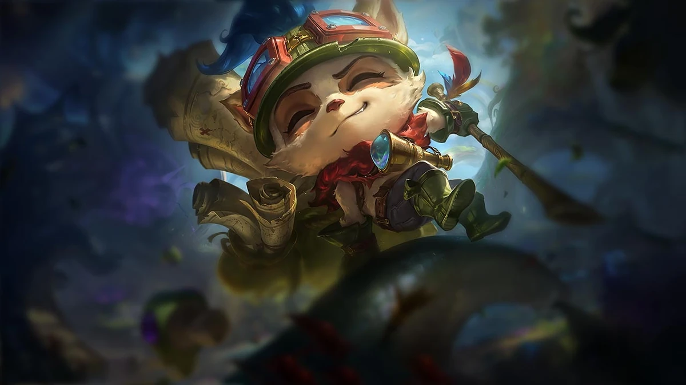
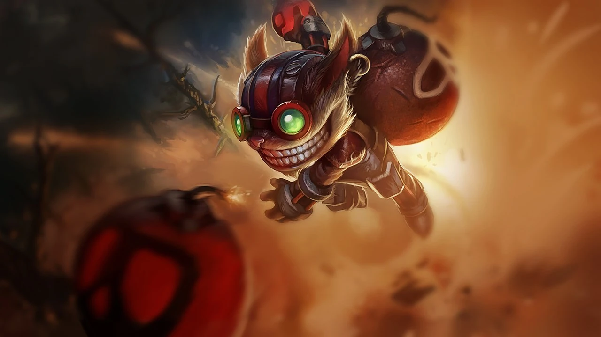
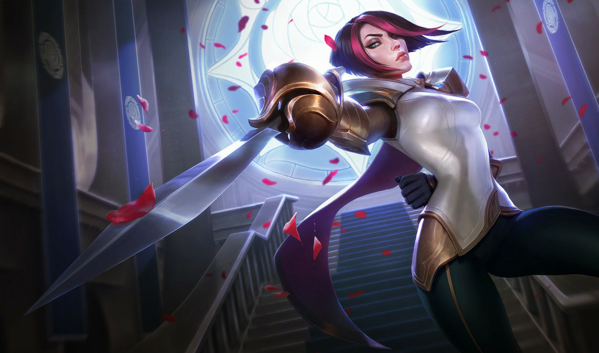
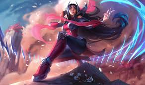

Teemo
Teemo is a well-known champion in the popular game League of Legends, characterized as a cheerful and mischievous yordle. He embodies a strong sense of morality and takes pride in adhering to the Bandle Scout's Code, which drives him to explore the world with his trusty blowgun. Teemo is notorious for his playful pranks, often targeting both enemies and allies, making him a unique and entertaining character within the game. His abilities include Blinding Dart, which shoots a dart that blinds the target while dealing damage; Move Quick, granting him increased movement speed; Toxic Shot, which allows his autoattacks to deal additional poison damage over time; and Mushroom Trap, where he places explosive mushrooms that damage and slow enemies in their vicinity.

Tristana
Tristana, the Yordle Gunner, also originates from Bandle City. She is an agile marksman who excels at sieging and bursting down enemies with her rapid-fire attacks and explosive abilities. Her mobility and ability to leap into battle make her a formidable threat in the late game.

Ziggs
Ziggs is a mischievous yordle from Bandle City,
known for his love of explosives and chaos. He
specializes in dealing area-of-effect magic damage,
and his playful yet chaotic demeanor is reflected
in his abilities. Ziggs can bombard enemies from a
distance and control the battlefield with mines
and a powerful ultimate that detonates in a large radius.

Garen
Garen, the Might of Demacia, is a proud warrior from
the Demacian military. Known for his simplicity
and effectiveness, he boasts high durability and strong
burst damage. Garen can spin into enemies
and silence them, making him a reliable choice for
players who enjoy straightforward yet impactful gameplay.

Fiora
Fiora Laurent is a master duelist from the prestigious Laurent family in Demacia.
Renowned for her exceptional swordsmanship and unwavering determination,
she seeks to prove herself as the greatest duelist in all of Valoran.
Fiora's personality is marked by her pride
and ambition, often leading her to challenge anyone who dares to question her skills.
In battle, she excels at one-on-one combat, using her agility
and precision to outmaneuver foes. Her abilities focus on marking
and exploiting weaknesses in her opponents, allowing her to deal
devastating damage while showcasing her prowess as a fighter.
Fiora's relentless pursuit of excellence and honor makes her a
formidable presence on the Rift

Lux
Lux, the Lady of Luminosity, hails from Demacia,
a kingdom that values light and justice.
She wields light magic to illuminate
the battlefield and support her allies.
With her dazzling spells, Lux can
blind foes, snare enemies, and
deal significant damage, making her a
versatile mage in both offense and defense.

Irelia
Irelia, the Blade Dancer, comes from Ionia, a land rich in spiritual harmony and martial traditions. She is a highly skilled duelist who utilizes her blades to deal swift and precise damage. Her abilities allow her to dash around the battlefield, execute enemies, and sustain herself through combat, making her a challenging opponent for anyone who underestimates her agility and damage potential.

Akali
Akali, the Rogue Assassin, is a member of the Kinkou Order and a master of stealth and agility. Trained in the art of ninjutsu, she is a fierce protector of her homeland and its traditions. Akali's backstory is steeped in conflict, as she struggles between her loyalty to the Kinkou and her desire for independence. With her dual blades and acrobatic fighting style, she strikes swiftly and silently, often disappearing before her enemies can react. Her abilities allow her to manipulate shadows and create zones of danger, making her a highly mobile and elusive champion. Akali embodies the spirit of rebellion and the quest for personal identity, making her a complex and intriguing character in the League of Legends universe.